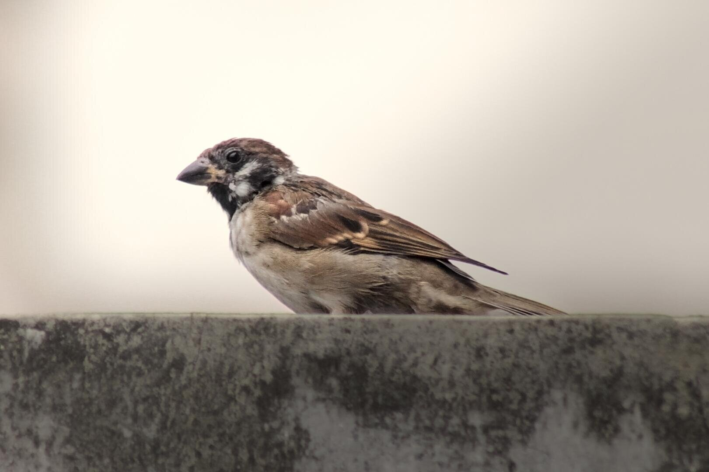

Photos & videos
Portraits, events and small everyday scenes. Soft light, steady hands, nothing too stiff.
Photography & code
I build small websites, and I take photos of quiet things. Two portfolios in one — the pictures first, then the code.

Some of the photos and videos I wanna share!
Nothing here yet — more soon!
The other half: websites and tools I've built and use myself.
Hii! A little bit about myself.
I'm part of MPS, a school photo community — Gen 17 — and a self-taught programmer. Most of my pictures are unedited (I'm learning to color grade), and most of my code started as something I wanted to use myself.
— val
Portraits, events and small everyday scenes. Soft light, steady hands, nothing too stiff.
Plain HTML, CSS and JavaScript. Small pages and scripts that do one thing well.
05 · Say hi
A shoot, a site, or just a hello. Message me on Instagram, or find the code on GitHub. I usually reply within a day.